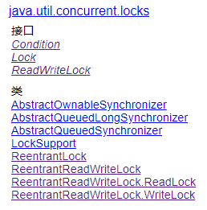

<!DOCTYPE html>


  <html class="light page-post">


<head><meta name="generator" content="Hexo 3.8.0">
  <meta charset="utf-8">
  
  <title>java多线程笔记 | 胡思旺</title>

  <meta name="viewport" content="width=device-width, initial-scale=1, maximum-scale=1">

  
    <meta name="keywords" content="全栈,微服务,Java,Netty,Vue,机器学习,Python">
  

  <meta name="description" content="Java多线程 1.基本概念 并发：交替执行多任务，不一定要同时    并行：同时处理多个任务    同步：程序发出一个调用，在没有得到结果之前，该调用就不返回，程序阻塞。但是一旦调用返回，就得到返回值    异步：程序发出一个调用，这个调用就直接返回了，没有返回结果。当一个异步过程调用发出后，调用者不会立刻得到结果。而是在调用发出后，被调用者通过状态、来通知调用者，或通过回调函数处理这个调用">
<meta property="og:type" content="article">
<meta property="og:title" content="java多线程笔记">
<meta property="og:url" content="http://yoursite.com/2018/10/31/java多线程笔记/index.html">
<meta property="og:site_name" content="胡思旺">
<meta property="og:description" content="Java多线程 1.基本概念 并发：交替执行多任务，不一定要同时    并行：同时处理多个任务    同步：程序发出一个调用，在没有得到结果之前，该调用就不返回，程序阻塞。但是一旦调用返回，就得到返回值    异步：程序发出一个调用，这个调用就直接返回了，没有返回结果。当一个异步过程调用发出后，调用者不会立刻得到结果。而是在调用发出后，被调用者通过状态、来通知调用者，或通过回调函数处理这个调用">
<meta property="og:locale" content="default">
<meta property="og:image" content="http://yoursite.com/2018/10/31/java多线程笔记/thread-state.png">
<meta property="og:image" content="http://yoursite.com/2018/10/31/java多线程笔记/lock.PNG">
<meta property="og:updated_time" content="2018-12-04T03:50:21.285Z">
<meta name="twitter:card" content="summary">
<meta name="twitter:title" content="java多线程笔记">
<meta name="twitter:description" content="Java多线程 1.基本概念 并发：交替执行多任务，不一定要同时    并行：同时处理多个任务    同步：程序发出一个调用，在没有得到结果之前，该调用就不返回，程序阻塞。但是一旦调用返回，就得到返回值    异步：程序发出一个调用，这个调用就直接返回了，没有返回结果。当一个异步过程调用发出后，调用者不会立刻得到结果。而是在调用发出后，被调用者通过状态、来通知调用者，或通过回调函数处理这个调用">
<meta name="twitter:image" content="http://yoursite.com/2018/10/31/java多线程笔记/thread-state.png">

  

  
    <link rel="icon" href="/favicon.ico">
  

  <link href="/css/styles.css?v=c114cben" rel="stylesheet">


  
    <link rel="stylesheet" href="/css/personal-style.css">
  

  

  
  <script type="text/javascript">
    var _hmt = _hmt || [];
    (function() {
      var hm = document.createElement("script");
      hm.src = "//hm.baidu.com/hm.js?57e94d016e201fba3603a8a2b0263af0";
      var s = document.getElementsByTagName("script")[0];
      s.parentNode.insertBefore(hm, s);
    })();
  </script>


  
  <script type="text/javascript">
	(function(){
	    var bp = document.createElement('script');
	    var curProtocol = window.location.protocol.split(':')[0];
	    if (curProtocol === 'https') {
	        bp.src = 'https://zz.bdstatic.com/linksubmit/push.js';        
	    }
	    else {
	        bp.src = 'http://push.zhanzhang.baidu.com/push.js';
	    }
	    var s = document.getElementsByTagName("script")[0];
	    s.parentNode.insertBefore(bp, s);
	})();
  </script>


  

</head>
</html>
<body>


  
    <span id="toolbox-mobile" class="toolbox-mobile">盒子</span>
  

  <div class="post-header CENTER">
   
  <div class="toolbox">
    <a class="toolbox-entry" href="/">
      <span class="toolbox-entry-text">盒子</span>
      <i class="icon-angle-down"></i>
      <i class="icon-home"></i>
    </a>
    <ul class="list-toolbox">
      
        <li class="item-toolbox">
          <a class="CIRCLE" href="/archives/" rel="noopener noreferrer" target="_self">
            博客
          </a>
        </li>
      
        <li class="item-toolbox">
          <a class="CIRCLE" href="/project/" rel="noopener noreferrer" target="_self">
            项目
          </a>
        </li>
      
        <li class="item-toolbox">
          <a class="CIRCLE" href="/category/" rel="noopener noreferrer" target="_self">
            分类
          </a>
        </li>
      
        <li class="item-toolbox">
          <a class="CIRCLE" href="/search/" rel="noopener noreferrer" target="_self">
            搜索
          </a>
        </li>
      
        <li class="item-toolbox">
          <a class="CIRCLE" href="/about/" rel="noopener noreferrer" target="_self">
            联系
          </a>
        </li>
      
    </ul>
  </div>


</div>


  <div id="toc" class="toc-article">
    <strong class="toc-title">文章目录</strong>
    <ol class="toc"><li class="toc-item toc-level-1"><a class="toc-link" href="#Java多线程"><span class="toc-text">Java多线程</span></a><ol class="toc-child"><li class="toc-item toc-level-2"><a class="toc-link" href="#1-基本概念"><span class="toc-text">1.基本概念</span></a></li><li class="toc-item toc-level-2"><a class="toc-link" href="#2-进程与线程的区别"><span class="toc-text">2.进程与线程的区别</span></a></li><li class="toc-item toc-level-2"><a class="toc-link" href="#3-多线程的优缺点"><span class="toc-text">3.多线程的优缺点</span></a></li><li class="toc-item toc-level-2"><a class="toc-link" href="#4-如何避免死锁与活锁"><span class="toc-text">4.如何避免死锁与活锁</span></a></li></ol></li><li class="toc-item toc-level-1"><a class="toc-link" href="#Java线程"><span class="toc-text">Java线程</span></a></li><li class="toc-item toc-level-1"><a class="toc-link" href="#Java线程创建"><span class="toc-text">Java线程创建</span></a></li><li class="toc-item toc-level-1"><a class="toc-link" href="#Thread中的重要方法"><span class="toc-text">Thread中的重要方法</span></a></li><li class="toc-item toc-level-1"><a class="toc-link" href="#Java线程间通信"><span class="toc-text">Java线程间通信</span></a><ol class="toc-child"><li class="toc-item toc-level-2"><a class="toc-link" href="#Object"><span class="toc-text">Object</span></a></li><li class="toc-item toc-level-2"><a class="toc-link" href="#管道"><span class="toc-text">管道</span></a></li></ol></li><li class="toc-item toc-level-1"><a class="toc-link" href="#Java并发底层实现"><span class="toc-text">Java并发底层实现</span></a><ol class="toc-child"><li class="toc-item toc-level-2"><a class="toc-link" href="#1-synchronized"><span class="toc-text">1.synchronized</span></a></li><li class="toc-item toc-level-2"><a class="toc-link" href="#2-volatile"><span class="toc-text">2.volatile</span></a></li></ol></li><li class="toc-item toc-level-1"><a class="toc-link" href="#Lock锁"><span class="toc-text">Lock锁</span></a></li><li class="toc-item toc-level-1"><a class="toc-link" href="#Semaphore信号量"><span class="toc-text">Semaphore信号量</span></a></li><li class="toc-item toc-level-1"><a class="toc-link" href="#区别"><span class="toc-text">区别</span></a></li><li class="toc-item toc-level-1"><a class="toc-link" href="#Java中的多线程同步手段"><span class="toc-text">Java中的多线程同步手段</span></a></li><li class="toc-item toc-level-1"><a class="toc-link" href="#分布式锁"><span class="toc-text">分布式锁</span></a></li></ol>
  </div>


<div class="content content-post CENTER">
   <article id="post-java多线程笔记" class="article article-type-post" itemprop="blogPost">
  <header class="article-header">
    <h1 class="post-title">java多线程笔记</h1>

    <div class="article-meta">
      <span>
        <i class="icon-calendar"></i>
        <span>2018.10.31</span>
      </span>

      
        <span class="article-author">
          <i class="icon-user"></i>
          <span>siwang.hu</span>
        </span>
      

      
  <span class="article-category">
    <i class="icon-list"></i>
    <a class="article-category-link" href="/categories/java并发/">java并发</a>
  </span>


      
        <span>
          <i class="icon-comment"></i>
          <a href="http://www.github.com/siwanghu/2018/10/31/java多线程笔记/#disqus_thread"></a>
        </span>
      

      
      
    </div>
  </header>

  <div class="article-content">
    
      <h1 id="Java多线程"><a href="#Java多线程" class="headerlink" title="Java多线程"></a>Java多线程</h1><blockquote>
<h2 id="1-基本概念"><a href="#1-基本概念" class="headerlink" title="1.基本概念"></a><strong>1.基本概念</strong></h2><ul>
<li><p>并发：交替执行多任务，不一定要同时  </p>
</li>
<li><p>并行：同时处理多个任务  </p>
</li>
<li><p>同步：程序发出一个调用，在没有得到结果之前，该调用就不返回，程序阻塞。但是一旦调用返回，就得到返回值  </p>
</li>
<li><p>异步：程序发出一个调用，这个调用就直接返回了，没有返回结果。当一个异步过程调用发出后，调用者不会立刻得到结果。而是在调用发出后，被调用者通过状态、来通知调用者，或通过回调函数处理这个调用  </p>
</li>
<li><p>阻塞：是指调用结果返回之前，当前线程会被挂起。调用线程只有在得到结果之后才会返回  </p>
</li>
<li><p>非阻塞：指在不能立刻得到结果之前，该调用不会阻塞当前线程  </p>
</li>
<li><p>竞态条件：当两个线程竞争同一资源时，如果对资源的访问顺序敏感，就称存在竞态条件  </p>
</li>
<li><p>临界区：导致竞态条件发生的代码区称作临界区  </p>
</li>
<li><p>死锁：多个线程互相等待对方释放锁，从而进入无限期等待状态  </p>
</li>
<li><p>活锁：活锁指的是任务或者执行者没有被阻塞，由于某些条件没有满足，导致一直重复尝试—失败—尝试—失败的过程  </p>
</li>
<li><p>饥饿：线程一直无法获得运行资源，导致一直没有运行  </p>
</li>
<li><p>上下文切换： CPU 从执行一个线程切换到执行另一个线程时，CPU 需要保存当前线程的本地数据，程序指针等状态，并加载下一个要执行的线程的本地数据，程序指针等  </p>
</li>
<li><p>公平锁：多个线程按照申请锁的顺序来获取锁(Lock与Semaphore可以在构造函数中指定为公平锁)  </p>
</li>
<li><p>非公平锁：多个线程获取锁的顺序并不是按照申请锁的顺序，有可能后申请的线程比先申请的线程优先获取锁(synchronized是一种非公平锁)  </p>
</li>
<li><p>可重入锁：在同一个线程在外层方法获取锁的时候，在进入内层方法会自动获取锁(synchronized是一个可重入锁)  </p>
</li>
<li><p>独享锁：指该锁一次只能被一个线程所持有(互斥锁)  </p>
</li>
<li><p>共享锁：指该锁可被多个线程所持有(读写锁)  </p>
</li>
<li><p>互斥锁：独享锁具体实现，在Java中是ReentrantLock类  </p>
</li>
<li><p>读写锁：共享锁具体实现，Java中的具体实现就是ReadWriteLock  </p>
</li>
<li><p>自旋锁：自旋锁是指尝试获取锁的线程不会立即阻塞，而是采用循环的方式去尝试获取锁  </p>
</li>
<li><p>乐观锁：总是认为不会产生并发问题，每次去取数据的时候总认为不会有其他线程对数据进行修改，因此不会上锁，但是在更新时会判断其他线程在这之前有没有对数据进行修改，一般会使用版本号机制或CAS操作实现  </p>
</li>
<li><p>悲观锁： 总是假设最坏的情况，每次取数据时都认为其他线程会修改，所以都会加锁（读锁、写锁、行锁等），当其他线程想要访问数据时，都需要阻塞挂起  </p>
</li>
</ul>
<h2 id="2-进程与线程的区别"><a href="#2-进程与线程的区别" class="headerlink" title="2.进程与线程的区别"></a><strong>2.进程与线程的区别</strong></h2><ul>
<li><p>进程代表一个正在运行的程序  </p>
</li>
<li><p>进程是操作系统进行资源分配的基本单位  </p>
</li>
<li><p>线程是操作系统进行调度的基本单位  </p>
</li>
<li><p>一个程序至少有一个进程，一个进程至少有一个线程  </p>
</li>
<li><p>线程比进程划分更细，执行开销更小，并发性更高  </p>
</li>
<li><p>进程是一个实体，拥有独立的资源；同一个进程中的多个线程共享进程的资源  </p>
</li>
</ul>
<p>&nbsp;&nbsp;&nbsp;&nbsp;<em>JVM在单个进程中运行，JVM中的线程共享属于该进程的堆。这就是为什么几个线程可以访问同一个对象。线程共享堆并拥有自己的堆栈空间。这是为何一个线程如何调用一个方法以及它的局部变量是保持线程安全的。但是堆不是线程安全的并且为了线程安全必须进行同步</em>  </p>
<h2 id="3-多线程的优缺点"><a href="#3-多线程的优缺点" class="headerlink" title="3.多线程的优缺点"></a><strong>3.多线程的优缺点</strong></h2><p><strong>优点：</strong>  </p>
<ul>
<li>更好的资源利用</li>
<li>更简单的编程模型  </li>
<li>程序响应更灵敏  </li>
</ul>
<p><strong>缺点：</strong>  </p>
<ul>
<li>安全性问题(资源访问)  </li>
<li>活跃性问题(死锁)  </li>
<li>性能问题(上下文切换)  </li>
</ul>
<h2 id="4-如何避免死锁与活锁"><a href="#4-如何避免死锁与活锁" class="headerlink" title="4.如何避免死锁与活锁"></a><strong>4.如何避免死锁与活锁</strong></h2><ul>
<li><p>加锁顺序<br>确保所有的线程都是按照相同的顺序获得锁，那么死锁就不会发生  </p>
</li>
<li><p>加锁时限<br>获取锁的时候加一个超时时间，这也就意味着在尝试获取锁的过程中若超过了这个时限该线程则放弃对该锁请求,回退并释放所有已经获得的锁  </p>
</li>
<li><p>死锁检测  </p>
</li>
<li><p>没有避免活锁的通用指南<br>需要开发者自己小心设计代码逻辑  </p>
</li>
</ul>
</blockquote>
<h1 id="Java线程"><a href="#Java线程" class="headerlink" title="Java线程"></a>Java线程</h1><blockquote>
<p>java中定义了6种不同的线程状态，在给定的一个时刻，线程只能处于其中的一个状态：  </p>
<ul>
<li><p>开始（New）：还没有调用 start() 方法的线程处于此状态  </p>
</li>
<li><p>可运行（Runnable）：已经调用了start()方法的线程状态。此状态意味着，线程已经准备好了，一旦被线程调度器分配了CPU时间片，就可以运行线程  </p>
</li>
<li><p>阻塞（Blocked）：线程有可能会进入I/O交互，还可能调用sleep()方法，还有可能在当前线程当中有其它线程调用了join()方法，阻塞状态的线程是没有释放对象锁  </p>
</li>
<li><p>等待（Waiting）:一个线程处于等待状态，是由于执行了 3 个方法中的任意方法:Object.wait(),Thread.join()<br>LockSupport.park()  </p>
</li>
<li><p>定时等待（Timed waiting）：一个线程处于定时等待状态，是由于执行了以下方法中的任意方法：<br>Thread.sleep(sleeptime)<br>Object.wait(timeout)<br>Thread.join(timeout)<br>LockSupport.parkNanos(timeout)<br>LockSupport.parkUntil(timeout)  </p>
</li>
<li><p>终止(Terminated)：线程 run() 方法执行结束，或者因异常退出了 run() 方法，则该线程结束生命周期  </p>
</li>
</ul>
<p>  </p>
<p><em>区别：进入waiting状态是线程主动的, 而进入blocked状态是被动的;相同点:都暂时停止线程的执行, 线程本身不会占用CPU时间片.区别是调用了sleep方法的线程直接受CPU调度, 而wait则是等待另外的java线程在持有同一个对象锁的同步块/方法中进行notify调用</em>  </p>
</blockquote>
<h1 id="Java线程创建"><a href="#Java线程创建" class="headerlink" title="Java线程创建"></a>Java线程创建</h1><blockquote>
<ul>
<li>继承Thread类  </li>
<li>实现Runable接口  </li>
<li>使用线程池(ThreadPoolExecutor)  </li>
<li>实现callable接口  <figure class="highlight plain"><table><tr><td class="gutter"><pre><span class="line">1</span><br><span class="line">2</span><br><span class="line">3</span><br><span class="line">4</span><br><span class="line">5</span><br><span class="line">6</span><br><span class="line">7</span><br><span class="line">8</span><br><span class="line">9</span><br><span class="line">10</span><br><span class="line">11</span><br><span class="line">12</span><br><span class="line">13</span><br><span class="line">14</span><br></pre></td><td class="code"><pre><span class="line">public class CallableDemo &#123;</span><br><span class="line"></span><br><span class="line">    public static void main(String[] args) &#123;</span><br><span class="line">        Callable&lt;Integer&gt; callable = () -&gt; new Random().nextInt(100);</span><br><span class="line">        FutureTask&lt;Integer&gt; future = new FutureTask&lt;&gt;(callable);</span><br><span class="line">        new Thread(future).start();</span><br><span class="line">        try &#123;</span><br><span class="line">            Thread.sleep(1000);//可能做一些事情</span><br><span class="line">            System.out.println(future.get());</span><br><span class="line">        &#125; catch (InterruptedException | ExecutionException e) &#123;</span><br><span class="line">            e.printStackTrace();</span><br><span class="line">        &#125;</span><br><span class="line">    &#125;</span><br><span class="line">&#125;</span><br></pre></td></tr></table></figure>
</li>
</ul>
</blockquote>
<h1 id="Thread中的重要方法"><a href="#Thread中的重要方法" class="headerlink" title="Thread中的重要方法"></a>Thread中的重要方法</h1><blockquote>
<ul>
<li><p>run - 线程的执行实体  </p>
</li>
<li><p>start - 线程的启动方法  </p>
</li>
<li><p>setName、getName - 可以通过 setName()、 getName() 来设置、获取线程名称  </p>
</li>
<li><p>setPriority、getPriority - 在 Java 中，所有线程在运行前都会保持在就绪状态，那么此时，哪个线程优先级高，哪个线程就有可能被先执行。可以通过 setPriority、getPriority 来设置、获取线程优先级  </p>
</li>
<li><p>setDaemon、isDaemon - 可以使用 setDaemon() 方法设置线程为守护线程；可以使用 isDaemon() 方法判断线程是否为守护线程  </p>
</li>
<li><p>isAlive - 可以通过 isAlive 来判断线程是否启动  </p>
</li>
<li><p>interrupt - 当一个线程运行时，另一个线程可以直接通过 interrupt() 方法中断其运行状态  </p>
</li>
<li><p>join - 使用 join() 方法让一个线程强制运行，线程强制运行期间，其他线程无法运行，必须等待此线程完成之后才可以继续执行  </p>
</li>
<li><p>Thread.sleep - 使用 Thread.sleep() 方法即可实现休眠  </p>
</li>
<li><p>Thread.yield - 可以使用 Thread.yield() 方法将一个线程的操作暂时让给其他线程执行  </p>
</li>
</ul>
</blockquote>
<h1 id="Java线程间通信"><a href="#Java线程间通信" class="headerlink" title="Java线程间通信"></a>Java线程间通信</h1><blockquote>
<h2 id="Object"><a href="#Object" class="headerlink" title="Object"></a><strong>Object</strong></h2><p>wait、notify、notifyAll 是 Object 类中的方法  </p>
<ul>
<li>wait - 线程自动释放其占有的对象锁，并等待 notify  </li>
<li><p>notify - 唤醒一个正在 wait 当前对象锁的线程，并让它拿到对象锁  </p>
</li>
<li><p>notifyAll - 唤醒所有正在 wait 前对象锁的线程  </p>
</li>
</ul>
<p><strong>notify与notifyAll的区别</strong>  </p>
<ul>
<li><p>唤醒在此对象监视器上等待的单个线程。如果所有线程都在此对象上等待，则会选择唤醒其中一个线程。选择是任意性的，并在对实现做出决定时发生  </p>
</li>
<li><p>唤醒在此对象监视器上等待的所有线程  </p>
</li>
</ul>
<h2 id="管道"><a href="#管道" class="headerlink" title="管道"></a><strong>管道</strong></h2><p>主要用于线程之间的数据传输，而传输的媒介为内存. 4 种具体实现：PipedOutputStream、PipedInputStream、PipedReader 和 PipedWriter，前两种面向字节，而后两种面向字符  </p>
<p><em>ThreadLocal线程本地变量，ThreadLocal 为变量在每个线程中都创建了一个副本，那么每个线程可以访问自己内部的副本变量</em><br><figure class="highlight plain"><table><tr><td class="gutter"><pre><span class="line">1</span><br><span class="line">2</span><br><span class="line">3</span><br><span class="line">4</span><br><span class="line">5</span><br><span class="line">6</span><br><span class="line">7</span><br><span class="line">8</span><br><span class="line">9</span><br><span class="line">10</span><br><span class="line">11</span><br><span class="line">12</span><br><span class="line">13</span><br><span class="line">14</span><br><span class="line">15</span><br><span class="line">16</span><br><span class="line">17</span><br><span class="line">18</span><br><span class="line">19</span><br><span class="line">20</span><br><span class="line">21</span><br><span class="line">22</span><br><span class="line">23</span><br><span class="line">24</span><br><span class="line">25</span><br><span class="line">26</span><br><span class="line">27</span><br><span class="line">28</span><br><span class="line">29</span><br><span class="line">30</span><br><span class="line">31</span><br><span class="line">32</span><br><span class="line">33</span><br><span class="line">34</span><br><span class="line">35</span><br><span class="line">36</span><br><span class="line">37</span><br><span class="line">38</span><br><span class="line">39</span><br></pre></td><td class="code"><pre><span class="line">public class Piped &#123;</span><br><span class="line"></span><br><span class="line">    public static void main(String[] args) throws Exception &#123;</span><br><span class="line">        PipedWriter out = new PipedWriter();</span><br><span class="line">        PipedReader in = new PipedReader();</span><br><span class="line">        // 将输出流和输入流进行连接，否则在使用时会抛出IOException</span><br><span class="line">        out.connect(in);</span><br><span class="line">        Thread printThread = new Thread(new Print(in), &quot;PrintThread&quot;);</span><br><span class="line">        printThread.start();</span><br><span class="line">        int receive = 0;</span><br><span class="line">        try &#123;</span><br><span class="line">            while ((receive = System.in.read()) != -1) &#123;</span><br><span class="line">                out.write(receive);</span><br><span class="line">            &#125;</span><br><span class="line">        &#125; finally &#123;</span><br><span class="line">            out.close();</span><br><span class="line">        &#125;</span><br><span class="line">    &#125;</span><br><span class="line"></span><br><span class="line">    static class Print implements Runnable &#123;</span><br><span class="line"></span><br><span class="line">        private PipedReader in;</span><br><span class="line"></span><br><span class="line">        Print(PipedReader in) &#123;</span><br><span class="line">            this.in = in;</span><br><span class="line">        &#125;</span><br><span class="line"></span><br><span class="line">        public void run() &#123;</span><br><span class="line">            int receive = 0;</span><br><span class="line">            try &#123;</span><br><span class="line">                while ((receive = in.read()) != -1) &#123;</span><br><span class="line">                    System.out.print((char) receive);</span><br><span class="line">                &#125;</span><br><span class="line">            &#125; catch (IOException e) &#123;</span><br><span class="line">                e.printStackTrace();</span><br><span class="line">            &#125;</span><br><span class="line">        &#125;</span><br><span class="line">    &#125;</span><br><span class="line">&#125;</span><br></pre></td></tr></table></figure></p>
</blockquote>
<h1 id="Java并发底层实现"><a href="#Java并发底层实现" class="headerlink" title="Java并发底层实现"></a>Java并发底层实现</h1><blockquote>
<h2 id="1-synchronized"><a href="#1-synchronized" class="headerlink" title="1.synchronized"></a><strong>1.synchronized</strong></h2><p>关键字 synchronized 可以保证在同一个时刻，只有一个线程可以执行某个方法或者某个代码块<br><strong>原理：</strong>  </p>
<ul>
<li><p>对于普通同步方法，锁是当前实例对象<br>造成其他的线程也无法调用当前类的其他同步方法  </p>
</li>
<li><p>对于静态同步方法，锁是当前类的 Class 对象  </p>
</li>
<li><p>对于同步方法块，锁是Synchonized 括号里配置的对象<br>同步方法块是细粒度的同步，推荐使用这种写法<br><em>注意：Java中的synchronized是可重入的，即一个线程得到一个对象锁后再次请求该对象锁，是永远可以拿到锁的</em>  </p>
<h2 id="2-volatile"><a href="#2-volatile" class="headerlink" title="2.volatile"></a><strong>2.volatile</strong></h2><p>volatile 是轻量级的 synchronized，它在多处理器开发中保证了共享变量的“可见性”  </p>
</li>
</ul>
<p>可见性的意思是当一个线程修改一个共享变量时，另外一个线程能读到这个修改的值  </p>
<p>一旦一个共享变量（类的成员变量、类的静态成员变量）被 volatile 修饰之后，那么就具备了两层语义：保证了不同线程对这个变量进行操作时的可见性，即一个线程修改了某个变量的值，这新值对其他线程来说是立即可见的。禁止进行指令重排序。如果一个字段被声明成 volatile，Java 线程内存模型确保所有线程看到这个变量的值是一致的  </p>
</blockquote>
<h1 id="Lock锁"><a href="#Lock锁" class="headerlink" title="Lock锁"></a>Lock锁</h1><blockquote>
<p><strong>synchronized缺陷</strong>  </p>
<ul>
<li><p>被synchronized修饰的方法或代码块，只能被一个线程访问。如果这个线程被阻塞，其他线程也只能等待</p>
</li>
<li><p>synchronized 不能响应中断  </p>
</li>
<li><p>synchronized 没有超时机制  </p>
</li>
<li><p>synchronized 只能是非公平锁  </p>
</li>
</ul>
<p>  </p>
<p><strong>Lock接口</strong><br><figure class="highlight plain"><table><tr><td class="gutter"><pre><span class="line">1</span><br><span class="line">2</span><br><span class="line">3</span><br><span class="line">4</span><br><span class="line">5</span><br><span class="line">6</span><br><span class="line">7</span><br><span class="line">8</span><br></pre></td><td class="code"><pre><span class="line">public interface Lock &#123;</span><br><span class="line">    void lock();</span><br><span class="line">    void lockInterruptibly() throws InterruptedException;</span><br><span class="line">    boolean tryLock();</span><br><span class="line">    boolean tryLock(long time, TimeUnit unit) throws InterruptedException;</span><br><span class="line">    void unlock();</span><br><span class="line">    Condition newCondition();</span><br><span class="line">&#125;</span><br></pre></td></tr></table></figure></p>
</blockquote>
<blockquote>
<ul>
<li><p>lock() 方法的作用是获取锁。如果锁已被其他线程获取，则进行等待  </p>
</li>
<li><p>tryLock() 方法的作用是尝试获取锁，如果成功，则返回 true；如果失败（即锁已被其他线程获取），则返回 false。也就是说，这个方法无论如何都会立即返回，获取不到锁时不会一直等待  </p>
</li>
<li><p>lockInterruptibly() 方法比较特殊，当通过这个方法去获取锁时，如果线程正在等待获取锁，则这个线程能够响应中断，即中断线程的等待状态。也就使说，当两个线程同时通过 lock.lockInterruptibly() 想获取某个锁时，假若此时线程 A 获取到了锁，而线程 B 只有在等待，那么对线程 B 调用 threadB.interrupt() 方法能够中断线程 B 的等待过程。<br><em>当一个线程获取了锁之后，是不会被 interrupt() 方法中断的。因为本身在前面的文章中讲过单独调用 interrupt() 方法不能中断正在运行过程中的线程，只能中断阻塞过程中的线程。因此当通过 lockInterruptibly() 方法获取某个锁时，如果不能获取到，只有进行等待的情况下，是可以响应中断的</em>  </p>
</li>
<li><p>unlock() 方法的作用是释放锁  </p>
</li>
</ul>
<p>ReentrantLock(可重入锁)是唯一实现了 Lock 接口的类<br><strong>ReadWriteLock 和 ReentrantReadWriteLock</strong><br>eadWriteLock 允许多个线程同时对其执行读操作，但是只允许一个线程对其执行写操作  </p>
<p>ReentrantReadWriteLock 实现了 ReadWriteLock 接口，所以它是一个读写锁  </p>
<p><strong>ReadWriteLock接口定义</strong><br><figure class="highlight plain"><table><tr><td class="gutter"><pre><span class="line">1</span><br><span class="line">2</span><br><span class="line">3</span><br><span class="line">4</span><br><span class="line">5</span><br><span class="line">6</span><br><span class="line">7</span><br><span class="line">8</span><br><span class="line">9</span><br><span class="line">10</span><br><span class="line">11</span><br></pre></td><td class="code"><pre><span class="line">public interface ReadWriteLock &#123;</span><br><span class="line">    /**</span><br><span class="line">     * 返回用于读操作的锁</span><br><span class="line">     */</span><br><span class="line">    Lock readLock();</span><br><span class="line"></span><br><span class="line">    /**</span><br><span class="line">     * 返回用于写操作的锁</span><br><span class="line">     */</span><br><span class="line">    Lock writeLock();</span><br><span class="line">&#125;</span><br></pre></td></tr></table></figure></p>
</blockquote>
<blockquote>
<p><strong>condition接口</strong><br>Condition 将 Object 监视器方法（wait、notify 和 notifyAll）分解成截然不同的对象，以便通过将这些对象与任意 Lock 实现组合使用，为每个对象提供多个等待 set（wait-set）。其中，Lock 替代了 synchronized 方法和语句的使用，Condition 替代了 Object 监视器方法的使用<br><figure class="highlight plain"><table><tr><td class="gutter"><pre><span class="line">1</span><br><span class="line">2</span><br><span class="line">3</span><br><span class="line">4</span><br><span class="line">5</span><br><span class="line">6</span><br><span class="line">7</span><br><span class="line">8</span><br><span class="line">9</span><br><span class="line">10</span><br><span class="line">11</span><br><span class="line">12</span><br><span class="line">13</span><br><span class="line">14</span><br><span class="line">15</span><br><span class="line">16</span><br><span class="line">17</span><br><span class="line">18</span><br><span class="line">19</span><br><span class="line">20</span><br><span class="line">21</span><br><span class="line">22</span><br><span class="line">23</span><br><span class="line">24</span><br><span class="line">25</span><br><span class="line">26</span><br><span class="line">27</span><br><span class="line">28</span><br><span class="line">29</span><br><span class="line">30</span><br><span class="line">31</span><br><span class="line">32</span><br><span class="line">33</span><br><span class="line">34</span><br><span class="line">35</span><br><span class="line">36</span><br><span class="line">37</span><br></pre></td><td class="code"><pre><span class="line"> class BoundedBuffer &#123;</span><br><span class="line">   final Lock lock = new ReentrantLock();</span><br><span class="line">   final Condition notFull  = lock.newCondition(); </span><br><span class="line">   final Condition notEmpty = lock.newCondition(); </span><br><span class="line"></span><br><span class="line">   final Object[] items = new Object[100];</span><br><span class="line">   int putptr, takeptr, count;</span><br><span class="line"></span><br><span class="line">   public void put(Object x) throws InterruptedException &#123;</span><br><span class="line">     lock.lock();</span><br><span class="line">     try &#123;</span><br><span class="line">       while (count == items.length) </span><br><span class="line">         notFull.await();</span><br><span class="line">       items[putptr] = x; </span><br><span class="line">       if (++putptr == items.length) putptr = 0;</span><br><span class="line">       ++count;</span><br><span class="line">       notEmpty.signal();</span><br><span class="line">     &#125; finally &#123;</span><br><span class="line">       lock.unlock();</span><br><span class="line">     &#125;</span><br><span class="line">   &#125;</span><br><span class="line"></span><br><span class="line">   public Object take() throws InterruptedException &#123;</span><br><span class="line">     lock.lock();</span><br><span class="line">     try &#123;</span><br><span class="line">       while (count == 0) </span><br><span class="line">         notEmpty.await();</span><br><span class="line">       Object x = items[takeptr]; </span><br><span class="line">       if (++takeptr == items.length) takeptr = 0;</span><br><span class="line">       --count;</span><br><span class="line">       notFull.signal();</span><br><span class="line">       return x;</span><br><span class="line">     &#125; finally &#123;</span><br><span class="line">       lock.unlock();</span><br><span class="line">     &#125;</span><br><span class="line">   &#125; </span><br><span class="line">&#125;</span><br></pre></td></tr></table></figure></p>
</blockquote>
<h1 id="Semaphore信号量"><a href="#Semaphore信号量" class="headerlink" title="Semaphore信号量"></a>Semaphore信号量</h1><blockquote>
<p>Semaphore用来控制同时访问某个特定资源的操作数量，或者同时执行某个指定操作的数量<br><strong>原理</strong>：Semaphore管理着一组虚拟的许可（permit），permit的初始数量可通过构造方法来指定。每次执行acquire方法可以获取一个permit，如果没有就等待；而release方法可以释放一个permit  </p>
<ul>
<li>Semaphore 可以用于实现资源池，如数据库连接池  </li>
<li>Semaphore 可以用于将任何一种容器变成有界阻塞容器<br>Semaphore构造方法  <figure class="highlight plain"><table><tr><td class="gutter"><pre><span class="line">1</span><br><span class="line">2</span><br><span class="line">3</span><br><span class="line">4</span><br></pre></td><td class="code"><pre><span class="line">//初始化固定数量的 permit，并且默认为非公平模式</span><br><span class="line">public Semaphore(int permits) &#123;&#125;</span><br><span class="line">//初始化固定数量的 permit，第二个参数设置是否为公平模式。所谓公平，是指等待久的优先获取许可</span><br><span class="line">public Semaphore(int permits, boolean fair) &#123;&#125;</span><br></pre></td></tr></table></figure>
</li>
</ul>
</blockquote>
<blockquote>
<p>Semaphore的重要方法<br><figure class="highlight plain"><table><tr><td class="gutter"><pre><span class="line">1</span><br><span class="line">2</span><br><span class="line">3</span><br><span class="line">4</span><br><span class="line">5</span><br><span class="line">6</span><br><span class="line">7</span><br><span class="line">8</span><br></pre></td><td class="code"><pre><span class="line">// 获取 1 个许可</span><br><span class="line">public void acquire() throws InterruptedException &#123;&#125;</span><br><span class="line">//获取 permits 个许可</span><br><span class="line">public void acquire(int permits) throws InterruptedException &#123;&#125;</span><br><span class="line">// 释放 1 个许可</span><br><span class="line">public void release() &#123;&#125;</span><br><span class="line">//释放 permits 个许可</span><br><span class="line">public void release(int permits) &#123;&#125;</span><br></pre></td></tr></table></figure></p>
</blockquote>
<blockquote>
<p>程序Demo<br><figure class="highlight plain"><table><tr><td class="gutter"><pre><span class="line">1</span><br><span class="line">2</span><br><span class="line">3</span><br><span class="line">4</span><br><span class="line">5</span><br><span class="line">6</span><br><span class="line">7</span><br><span class="line">8</span><br><span class="line">9</span><br><span class="line">10</span><br><span class="line">11</span><br><span class="line">12</span><br><span class="line">13</span><br><span class="line">14</span><br><span class="line">15</span><br><span class="line">16</span><br><span class="line">17</span><br><span class="line">18</span><br><span class="line">19</span><br><span class="line">20</span><br><span class="line">21</span><br><span class="line">22</span><br><span class="line">23</span><br><span class="line">24</span><br></pre></td><td class="code"><pre><span class="line">public class SemaphoreDemo &#123;</span><br><span class="line"></span><br><span class="line">    private static final int THREAD_COUNT = 30;</span><br><span class="line"></span><br><span class="line">    private static ExecutorService threadPool = Executors.newFixedThreadPool(THREAD_COUNT);</span><br><span class="line"></span><br><span class="line">    private static Semaphore s = new Semaphore(10);</span><br><span class="line"></span><br><span class="line">    public static void main(String[] args) &#123;</span><br><span class="line">        for (int i = 0; i &lt; THREAD_COUNT; i++) &#123;</span><br><span class="line">            threadPool.execute(() -&gt; &#123;</span><br><span class="line">                try &#123;</span><br><span class="line">                    s.acquire();</span><br><span class="line">                    System.out.println(&quot;save data&quot;);</span><br><span class="line">                    s.release();</span><br><span class="line">                &#125; catch (InterruptedException e) &#123;</span><br><span class="line">                    e.printStackTrace();</span><br><span class="line">                &#125;</span><br><span class="line">            &#125;);</span><br><span class="line">        &#125;</span><br><span class="line"></span><br><span class="line">        threadPool.shutdown();</span><br><span class="line">    &#125;</span><br><span class="line">&#125;</span><br></pre></td></tr></table></figure></p>
</blockquote>
<h1 id="区别"><a href="#区别" class="headerlink" title="区别"></a>区别</h1><blockquote>
<p> <strong>Semaphore与Lock的区别</strong>  </p>
<ul>
<li>Semaphore可以同时允许规定数量的线程执行  </li>
<li>Lock对于不同的线程是互斥  </li>
<li>Semaphore与Lock可以提供公平和不公平锁</li>
</ul>
<p><strong>synchronized与Lock的区别</strong>  </p>
<ul>
<li>synchronized 是Java 语言层面的，是内置的关键字  </li>
<li>synchronized 同步的代码块可以由JVM自动释放  </li>
<li>lock在性能上较好，支持公平锁和非公平锁  </li>
<li>对于wait()方法，lock提供了condition可以提供更精确的临界区操作  </li>
</ul>
</blockquote>
<h1 id="Java中的多线程同步手段"><a href="#Java中的多线程同步手段" class="headerlink" title="Java中的多线程同步手段"></a>Java中的多线程同步手段</h1><blockquote>
<ul>
<li>同步方法  </li>
<li>同步代码块  </li>
<li>使用volatile变量  </li>
<li>可重入锁  </li>
<li>尽量使用局部变量  </li>
</ul>
</blockquote>
<h1 id="分布式锁"><a href="#分布式锁" class="headerlink" title="分布式锁"></a>分布式锁</h1><blockquote>
<p><em>以上所述，只能保证在同一个JVM中的线程安全，在不同JVM（也就是分布式环境中）要保证线程安全，需要使用分布式锁</em>  </p>
<p>在分布式的集群环境中<strong>使用Redis实现分布式锁</strong><br>Redis分布式锁基本流程：  </p>
<ul>
<li><p><strong>1.加锁</strong><br>使用setnx命令，其中key是锁的唯一标识（可以按照业务命名），加锁伪代码：setnx(key,1)。当一个线程执行setnx返回1，说明key原本不存在，该线程成功得到了锁；当一个线程执行setnx返回0，说明key已经存在，该线程抢锁失败  </p>
</li>
<li><p><strong>2.解锁</strong><br>当得到锁的线程执行完任务，需要释放锁，以便其他线程可以进入，释放锁的最简单方式是执行del命令：del key  </p>
</li>
<li><p><strong>3.锁超时</strong><br>如果一个得到锁的线程在执行任务时挂掉，来不及显示释放锁，这块资源将被永远锁住，别的线程再也无法获取锁（Lock，synchronized线程挂掉，锁会自动释放）,所以setnx的key必须设置一个超时时间，以保证即使没有被显示释放，一段时间后自动释放,需要额外命令：expire key 30  </p>
</li>
</ul>
<p><strong>重要问题</strong>  </p>
<ul>
<li><p>由于setnx与expire是两个命令，必须要保证setnx与expire原子执行，如果setnx命令执行后,线程挂掉，锁会永远无法释放<br><em>Redis2.6.12版本以上增加set(key,1,30,nx取代以上两个命令)</em>  </p>
</li>
<li><p>锁误删<br>由于超时时间设置不对，造成锁时间失效，误删除。从而其它线程获取锁，当前线程会删除其他线程的锁（可以通过设置线程ID为key来解决误删其他线程的锁）。同时也可以设置守护线程来为锁续航。增加时间（如果当前线程在锁规定时间内没有结束，则守护线程增加锁的时间）  </p>
</li>
</ul>
</blockquote>

    
  </div>

</article>


   
  <div class="text-center donation">
    <div class="inner-donation">
      <span class="btn-donation">支持一下</span>
      <div class="donation-body">
        <div class="tip text-center">扫一扫，支持胡思旺</div>
        <ul>
        
          <li class="item">
            
              <span>微信扫一扫</span>
            
            
          </li>
        
          <li class="item">
            
              <span>支付宝扫一扫</span>
            
            
          </li>
        
        </ul>
      </div>
    </div>
  </div>


   
  <div class="box-prev-next clearfix">
    <a class="show pull-left" href="/2018/10/31/java容器笔记/">
        <i class="icon icon-angle-left"></i>
    </a>
    <a class="show pull-right" href="/2018/11/01/nlp笔记/">
        <i class="icon icon-angle-right"></i>
    </a>
  </div>


   
      <div class="git"></div>
   
</div>


  <a id="backTop" class="back-top">
    <i class="icon-angle-up"></i>
  </a>


  <div class="modal" id="modal">
  <span id="cover" class="cover hide"></span>
  <div id="modal-dialog" class="modal-dialog hide-dialog">
    <div class="modal-header">
      <span id="close" class="btn-close">关闭</span>
    </div>
    <hr>
    <div class="modal-body">
      <ul class="list-toolbox">
        
          <li class="item-toolbox">
            <a class="CIRCLE" href="/archives/" rel="noopener noreferrer" target="_self">
              博客
            </a>
          </li>
        
          <li class="item-toolbox">
            <a class="CIRCLE" href="/project/" rel="noopener noreferrer" target="_self">
              项目
            </a>
          </li>
        
          <li class="item-toolbox">
            <a class="CIRCLE" href="/category/" rel="noopener noreferrer" target="_self">
              分类
            </a>
          </li>
        
          <li class="item-toolbox">
            <a class="CIRCLE" href="/search/" rel="noopener noreferrer" target="_self">
              搜索
            </a>
          </li>
        
          <li class="item-toolbox">
            <a class="CIRCLE" href="/about/" rel="noopener noreferrer" target="_self">
              联系
            </a>
          </li>
        
      </ul>

    </div>
  </div>
</div>


  
      <div class="fexo-comments comments-post">
    
  <section class="disqus-comments">
    <div id="disqus_thread">
      <noscript>Please enable JavaScript to view the <a href="//disqus.com/?ref_noscript">comments powered by Disqus.</a></noscript>
    </div>
  </section>

  <script>
    var disqus_shortname = 'forsigner';
    
    var disqus_url = 'http://yoursite.com/2018/10/31/java多线程笔记/';
    
    (function(){
      var dsq = document.createElement('script');
      dsq.type = 'text/javascript';
      dsq.async = true;
      dsq.src = '//' + disqus_shortname + '.disqus.com/embed.js';
      (document.getElementsByTagName('head')[0] || document.getElementsByTagName('body')[0]).appendChild(dsq);
    })();
  </script>

  <script id="dsq-count-scr" src="//forsigner.disqus.com/count.js" async></script>


    

    
    

  <div id="gitment-comments"></div>
  <link rel="stylesheet" href="https://imsun.github.io/gitment/style/default.css">
  <script src="https://imsun.github.io/gitment/dist/gitment.browser.js"></script>
  <script>
    (function () {
      var gitment = new Gitment({
        owner: 'siwanghu',
        repo: 'my-blog-comment',
        oauth: {
          client_id: 'cfd421630edbd2213b4b',
          client_secret: '9584fd5ff8537ec1b2ea3509dda8f7904b1f58bc'
        },
        
        
        
        
        
        
        
        
      })
      gitment.render('gitment-comments')
    })()
  </script>


    

    
    

  </div>

  

  <script type="text/javascript">
  function loadScript(url, callback) {
    var script = document.createElement('script')
    script.type = 'text/javascript';

    if (script.readyState) { //IE
      script.onreadystatechange = function() {
        if (script.readyState == 'loaded' ||
          script.readyState == 'complete') {
          script.onreadystatechange = null;
          callback();
        }
      };
    } else { //Others
      script.onload = function() {
        callback();
      };
    }

    script.src = url;
    document.getElementsByTagName('head')[0].appendChild(script);
  }

  window.onload = function() {
    loadScript('/js/bundle.js?235683', function() {
      // load success
    });
  }
</script>

</body>
</html>
